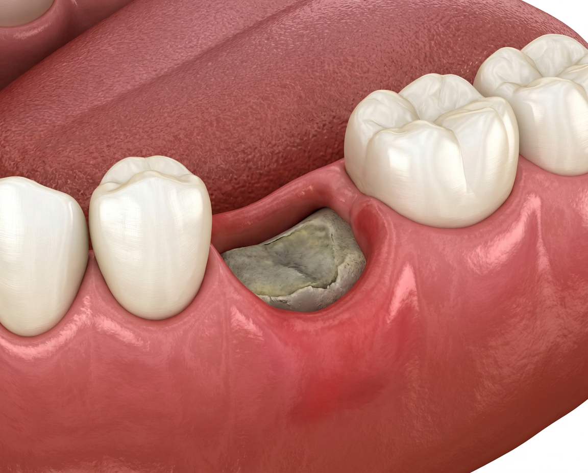
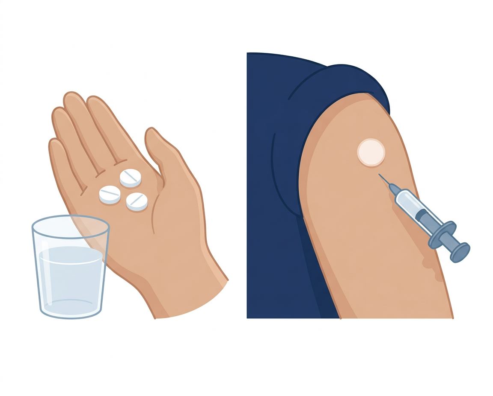
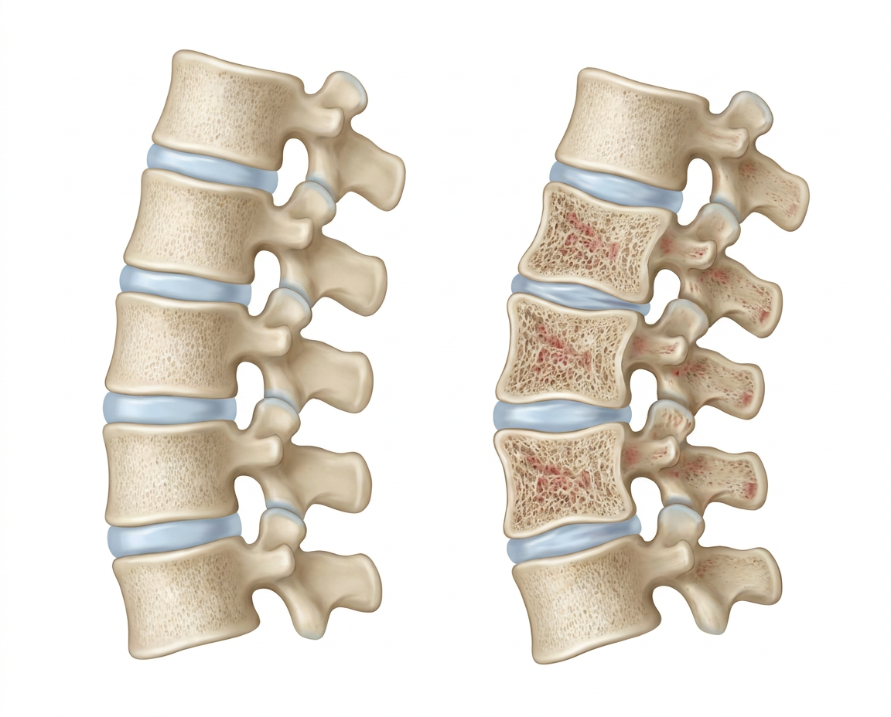

PATIENT EDUCATION · 치과 치료
골다공증 약과 치과 시술, 약을 끊는 것이 답이 아닙니다
필요한 치과 치료를 미루는 것이 오히려 위험할 수 있습니다 — 가장 중요한 것은 약 이름과 마지막 주사 날짜입니다
PATIENT EDUCATION · 치과 치료
골다공증 약과 치과 시술, 약을 끊는 것이 답이 아닙니다
필요한 치과 치료를 미루는 것이 오히려 위험할 수 있습니다. 가장 중요한 것은 드시는 약의 이름과 마지막 주사 날짜입니다.
1약 이름
2얼마나 드문가
3발치 시점
4치과에 알릴 것
CHAPTER 01 · START HERE
골다공증약을 먹으면 치과 치료를 못 하나요?
아닙니다. 필요한 치과 치료를 미루는 것이 오히려 더 위험합니다
골다공증 용량으로 먹는 약이나 프롤리아를 쓰는 분에서 턱뼈 문제가 생기는 일은 드뭅니다. 스케일링·충치 치료·신경 치료처럼 뼈를 건드리지 않는 치료는 약을 조정할 필요도 없습니다.
잇몸 염증이나 뿌리 끝 감염을 그대로 두는 것이 오히려 턱뼈 문제를 키웁니다. 실제로 턱뼈 문제가 생긴 분들에서는 이미 곪은 이를 뽑은 일이 앞선 경우가 많았습니다. 약이 무서워 치과를 미루지 마시고, 약 이름을 들고 가십시오.
2~5
먹는 골다공증약을 쓰는 1만 명 가운데 턱뼈 문제가 생기는 사람 수
1필요한 치과 치료는 받습니다
2약은 스스로 끊지 않습니다
3약 이름부터 확인합니다
Tip · 치과 예약이 잡히면 먼저 내과에 알려 주십시오. 약 종류에 따라 시점을 함께 맞추면 됩니다.
CHAPTER 02 · WHICH DRUG
가장 중요한 건 '약 이름'입니다
먹는 약 · 프롤리아 · 암 치료용 주사 — 셋은 완전히 다릅니다
알렌드로네이트 같은 먹는 약입니다. 턱뼈 문제는 1만 명당 2~5명 수준입니다.
1만 명당 4~30명. 더 중요한 건 오래 미루면 척추가 무너질 수 있다는 점.
100명 중 1~15명에서 생깁니다 — 골다공증 용량보다 100~1,000배 높습니다.
1① 먹는 약
2② 프롤리아 주사
3③ 암 치료용 고용량 주사 — 다른 이야기
Tip · 치과에서 물으면 약봉투나 처방전을 그대로 보여 주는 것이 가장 정확합니다.
CHAPTER 02 · WHICH DRUG
다른 약은 하나입니다
다섯 칸 중 턱뼈 문제가 그려진 칸은 하나뿐입니다
왼쪽부터 ①먹는 약 ②1년에 한 번 맞는 주사 ③프롤리아 ④로모소주맙 ⑤테리파라타이드. 표시된 칸은 ③ 하나입니다. 설명용 그림입니다.
CHAPTER 03 · MRONJ
턱뼈 괴사가 무엇인가요
잇몸이 아물지 않고 뼈가 드러난 상태를 말합니다
① 골다공증약·항암 주사를 쓴 적이 있고 ② 턱뼈가 8주 넘게 드러나 있고 ③ 턱 방사선 치료력 없음.
골다공증 용량에서는 드물게 생깁니다. 다만 암 치료용 고용량 주사를 맞는 분들에서는 훨씬 흔합니다.
이를 뽑은 자리가 몇 주가 지나도 낫지 않거나, 턱이 계속 아프고 뼈가 만져지면 치과 진료를 받으세요.

이를 뽑은 자리가 아물지 않고 뼈가 드러난 모습 — 8주 넘게 이 상태가 이어지면 턱뼈 괴사로 봅니다.
Tip · 뼈가 보이지 않아도 턱이 계속 아프면 한 번 확인해 보세요.
CHAPTER 04 · RISK
얼마나 드문가 — 1만 명을 세어 봅니다
먹는 약은 1만 명당 2~5명, 프롤리아는 4~30명으로 보고됩니다
1만 명당 2~5명입니다. 약을 쓰지 않은 분들(1만 명당 0~2명)과 겹칠 만큼 낮은 숫자입니다.
1만 명당 4~30명으로 먹는 약보다는 높습니다. 10년 넘게 쓴 분들을 모아 본 값이라 기간이 긴 숫자입니다.
이를 뽑는 분들만 따로 모으면 숫자가 올라갑니다. 프롤리아를 맞으며 발치한 427명 중 10명(2.3%)에서 턱뼈 문제가 생겼습니다. 전체 위험과는 다릅니다.
2~5
먹는 골다공증약 1만 명당 생기는 수 · 프롤리아는 4~30명
1먹는 약 — 2~5명
2프롤리아 — 4~30명
3암 주사 — 훨씬 높음
Tip · 연구마다 세는 기간과 방법이 달라, 이 숫자들끼리 곧바로 견주지는 않습니다.
CHAPTER 05 · ONCOLOGY
암 치료용 주사는 다릅니다
같은 약 이름이어도 용량이 다르면 완전히 다른 이야기
골다공증에 쓰는 프롤리아는 6개월마다 60mg, 암 뼈전이에 쓰는 주사는 4주마다 120mg입니다. 누적 노출량이 수십 배가 됩니다.
암 치료를 받는 분들에서는 100명 중 1~15명입니다 — 골다공증 용량보다 100~1,000배 높습니다.
암 치료로 뼈 주사를 맞고 계시면 치과 치료 전에 담당 주치의와 먼저 상의하십시오.

먹는 약과 주사는 서로 다른 약입니다 — 치과에 가실 때 어느 쪽을 쓰는지 꼭 알려 주세요.
Tip · 암 치료로 뼈 주사를 맞는 분은 이 자료의 숫자를 그대로 적용하지 마십시오.
CHAPTER 06 · TRIGGERS
위험을 높이는 것 — 대부분 '감염'입니다
약보다 입안 상태가 더 큰 몫을 합니다
턱뼈 문제가 생긴 분들을 되짚어 보면 이를 뽑은 일이 앞선 경우가 62~82%로 가장 많았습니다. 다만 이미 감염된 이였던 탓도 큽니다.
잇몸병(치주염) · 뿌리 끝 곪음 · 임플란트 주위 염증 · 안 맞는 틀니가 잇몸을 계속 헐게 하는 것.
스테로이드를 오래 쓰는 경우, 당뇨, 콩팥병, 흡연, 고령이 겹치면 상처가 더디 아뭅니다.
감염
뽑는 것보다, 곪은 이를 그대로 두는 쪽이 더 문제입니다
1잇몸병·뿌리 끝 감염
2안 맞는 틀니 — 조정
3당뇨·흡연
Tip · 치과 치료를 피하려고 곪은 이를 두는 것이 가장 나쁜 선택입니다.
CHAPTER 07 · ORAL DRUGS
먹는 약은 발치 때문에 끊지 않습니다
2~3개월 쉬어도 약은 이미 뼈에 남아 있어, 끊는 이득이 확인되지 않았습니다
먹는 골다공증약은 뼈에 달라붙어 수년 동안 남습니다. 그래서 두세 달 쉰다고 뼈 안의 약이 빠지지는 않습니다.
약을 쉰 분들과 그대로 드신 분들에서 차이가 확인되지 않았습니다.
약을 쉬는 동안 골절을 막는 힘은 줄어듭니다. 스스로 끊지 마십시오.
수년
먹는 약이 뼈에 남아 있는 기간 — 그대로입니다
1먹는 약 — 계속 복용
2치과에는 약 이름 전달
32개월 휴약 여부는 의사가 정합니다
Tip · 치과에서 '몇 달 끊고 오세요' 라고 하면, 약 이름부터 알려 주십시오.
CHAPTER 08 · PROLIA
프롤리아는 다릅니다 — 미루면 위험
오래 미루면 척추뼈 골절이 한꺼번에 몰려서 옵니다
프롤리아는 뼈에 쌓이지 않고 몸에서 빠져나갑니다. 그래서 주사가 늦어지면 반동이 옵니다.
주사를 끊으면 척추 골절이 100명당 1년에 1.2건에서 7.1건으로 늘었습니다. 그중 61%가 여러 마디였습니다.
이미 척추 골절을 겪은 적이 있으면 여러 마디가 함께 무너질 위험이 약 3.9배였습니다.

주사를 오래 미룬 뒤의 척추 — 왼쪽에 견주어 오른쪽은 여러 마디가 납작하게 내려앉고 등이 굽었습니다. 설명용 일러스트.
Tip · 프롤리아는 '끊는 약'이 아니라 '시점을 맞추는 약'입니다.
CHAPTER 09 · TIMING
발치는 마지막 주사 3~4개월 뒤
계획할 수 있다면 이 구간이 가장 무난합니다
주사 힘이 한풀 꺾여 잘 아물고, 아직 반동이 올 시기는 아니기 때문입니다.
마지막 주사가 이미 5개월 전이라면 더 기다리지 말고 지금 뽑는 편이 낫습니다. 기다릴수록 골절 쪽 시계만 갑니다.
많이 아프거나 곪은 이라면 시점을 따지지 말고 바로 치료합니다. 감염을 두는 쪽이 더 나쁩니다.
3~4
마지막 주사 뒤 이 구간이 가장 무난합니다
13~4개월 뒤
25개월 지났으면 미루지 않는다
3아프거나 곪았으면 바로
Tip · 진료 때 마지막 주사 날짜를 꼭 확인해 주십시오. 그 날짜 하나로 계획이 정해집니다.
CHAPTER 09 · TIMING
시기가 중요합니다
주사와 주사 사이를 왼쪽에서 오른쪽으로 펼친 그림입니다
왼쪽 = 주사를 맞은 직후, 가운데 = 이를 뽑기 좋은 시기, 오른쪽 = 너무 미뤘을 때 척추가 내려앉는 시기입니다.
CHAPTER 10 · AFTER
발치 후 다음 주사는 언제 — 잇몸이 아물면
뼈가 다 찰 때까지 기다리지 않습니다
뽑은 자리를 잇몸이 안정적으로 덮으면 됩니다. 보통 6~8주 걸립니다.
뼈가 다 차려면 몇 달이 걸립니다. 그때까지 미루면 주사 간격이 너무 벌어집니다.
6개월 정시가 목표이고, 7개월은 넘기지 않는 것이 실무 기준입니다. 권고안의 마지막 한계선은 총 9개월입니다.
잇몸
다음 주사의 기준은 잇몸 — 보통 6~8주
1발치 → 잇몸 아묾
2다음 주사
3총 9개월 넘기지 않기
Tip · 치과에서 '뼈가 다 찰 때까지 주사 맞지 마세요' 라고 하면 내과에 알려 주세요.
CHAPTER 11 · IMPLANT
임플란트, 되나요 — 대부분 가능합니다
골다공증 용량에서는 절대 안 되는 시술이 아닙니다
골다공증 용량이라면 약을 끊지 않고도 심을 수 있다고 봅니다.
먹는 약을 오래 쓴 분들에서 임플란트 뒤 턱뼈 문제는 1,000명당 3명 정도로 보고됐고, 프롤리아에서는 0.5% 정도로 보고됐습니다.
잇몸병·당뇨·스테로이드가 있으면 미리 정리하고 시작합니다. 암 치료용 고용량 주사를 맞는 분은 이야기가 다릅니다.
3명
먹는 약 장기 복용 · 임플란트 뒤 1,000명당
1절대 금기 아님
2잇몸병·당뇨는 미리 정리
3암 치료용 고용량은 별개
Tip · 임플란트가 잘 붙는가와 턱뼈 문제가 생기는가는 서로 다른 이야기입니다.
CHAPTER 12 · CTX
CTX 검사, 되나요
결론부터 — 아니요
뼈가 얼마나 활발히 바뀌는지 보는 피검사입니다. 예전에 이 수치로 발치 시점을 정하자는 제안이 있었습니다.
이 수치의 정확도가 낮았습니다 — 맞힌 비율 약 34%.
약 이름·마지막 주사일·입안 상태가 더 중요합니다.
1CTX 기준 — 미검증
2약 이름부터
3마지막 주사
Tip · 검사 숫자 하나로 안전한 날을 정하지는 않습니다.
CHAPTER 13 · CHECKLIST
치과에 꼭 알려 주세요 — 네 가지면 됩니다
이 네 가지만 정확히 전하면 치과가 판단할 수 있습니다
'골다공증약'이라고만 하지 마시고 정확한 이름을 알려 주세요. 약봉투나 처방전을 그대로 보여 주시면 정확합니다.
프롤리아처럼 6개월마다 맞는 주사는 마지막 날짜가 계획의 출발점입니다. 몇 월 며칠에 맞았는지 확인해 두십시오.
언제부터 얼마나 오래 드셨는지, 중간에 바꾼 약이 있는지도 함께 알려 주세요.
4가지
약 이름 · 마지막 주사일 · 치료 기간 · 암 치료용인지
1약 이름·제형(먹는약/주사)
2마지막 주사 날짜
3④ 암 치료용인지 골다공증용인지
Tip · '주사 맞아요' 만으로는 골다공증용과 암 치료용이 구분되지 않습니다.
CLOSING
다시 보기 · 문의
QR을 스캔하면 같은 자료를 휴대폰에서 다시 열 수 있습니다
광교바른내과
경기 용인 수지구 광교중앙로 298, 4층 · 031-893-4560
소화기내과 · 일반내과 · 5대암 검진
이 자료의 성격
골다공증 치료 중 치과 치료를 앞둔 분들을 위한 설명자료입니다. 숫자는 진료실에서 참고하는 자료를 바탕으로 했고, 실제 치료 시점과 약 조정은 담당 의사·치과와 상의해 정합니다.
SCAN TO REVISIT
휴대폰에서 다시 보기
QR을 스캔하면 같은 자료를
휴대폰에서 다시 볼 수 있습니다